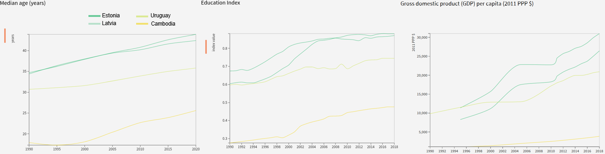

Influence factors
Case studies
In this section we will do a more qualitative analysis of alcohol consumption in several countries and what seems to influence it. We start with some insights coming from our alcohol consumption dataset in which we analyse the coutries with the biggest increase in alcohol consumption between the year 2010 and 2015. These are Cambodia, Latvia and Uruguay. Estonia is additionally analyzed as it shows an important increase and is closely related to the increase in Latvia.
Latvia & Estonia
Latvia passed from 9.9 to 11.1 litres of alcohol per capita from 2010 to 2015. Estonia in this same period passed from 15.2 to 15.8. For both these neighbour countries this trend started in 2009, but ended for Estonia in 2013 for then again decrease, while in Latvia the consumption continued to rise. These changes can have many explanations. Just before 2009 we see a significant drop of GDP for both countries, of which economies alcohol consumption is contributor. It is very common for Estonians to buy alcohol in Latvia as it is cheaper, and for Finns to buy it in Estonia for the same reason. It seems that during these years there has been a game to the bottom between Estonia and Latvia on alcohol taxes, which until 2013 brought prices down significantly. In Estonia a new alcohol strategy was adopted in 2013, increasing tax rates and raising awareness. Latvia also implemented an action plan in 2012-2014, but it didn’t contain any action on alcohol taxation. We see the median age growing, but having no correlation with changes in alcohol consumption. The Education Index remains stable in Estonia, while we can observe a decrease in Latvia between the years 2008 and 2012.
Uruguay
Uruguay passed from 8 to 9 litres per capita from 2010 to 2015. Looking more into the consumption data provided by the WHO we see that this is a trend started in 2003 and accelerated in 2009. We do not find online many information available in English on Uruguay alcohol policy history, but from the GDP data it seems that the economy started growing again in 2003, at the same time as the alcohol consumption started to rise again. The Education Index dropped significantly in 2009 and got back only in 20014 to its previous level, so this could be correlated with the alcohol consumption. We see no correlation with the median age which continues to rise slowly in this period.
Cambodia
Cambodia passed from 2 to 3.5 litres per capita from 2010 to 2015, the largest increase worldwide for this period of time, although total consumption remains low compared to many countries. This country seems to have a big problem related to alcohol advertising target towards youth and for the moment is has very limited policies to regulate alcohol consumption and advertising in general. For example small and informal producers are completely excempt of any taxation framework This problem seems highly entagled with economic incentives of the advertising industry for which alcohol accounts for more than 50 percent of all advertising revenues in the country . Relating alcohol consumption in these years to GDP seems difficult to make any relevant observation as it increases between 2010 and 2012, but drops again after that. Median age rises slowly and steadily, showing no correlation with alcohol consumption and the Education Index rises from 2010.
Let's dive a bit deeper to look qualitatively how alcohol policy and consumption over time in four countries: China, France, Switzerland and Ukraine. Our team-members come from these respective countries and thus will not be blocked by language problems and probably can bring more socio-cultural context.


Discussion
Conclusion
The Notorious ENG Team
Zhuoyi Huang
Computer Science
Tomas Turner
Material Science
Tristan Trebaol
Mechanical Engineering
Nykita Shulga
Computer Science
“Breakthrough innovation occurs when we bring down boundaries and encourage disciplines to learn from each other” ― Gyan Nagpal.